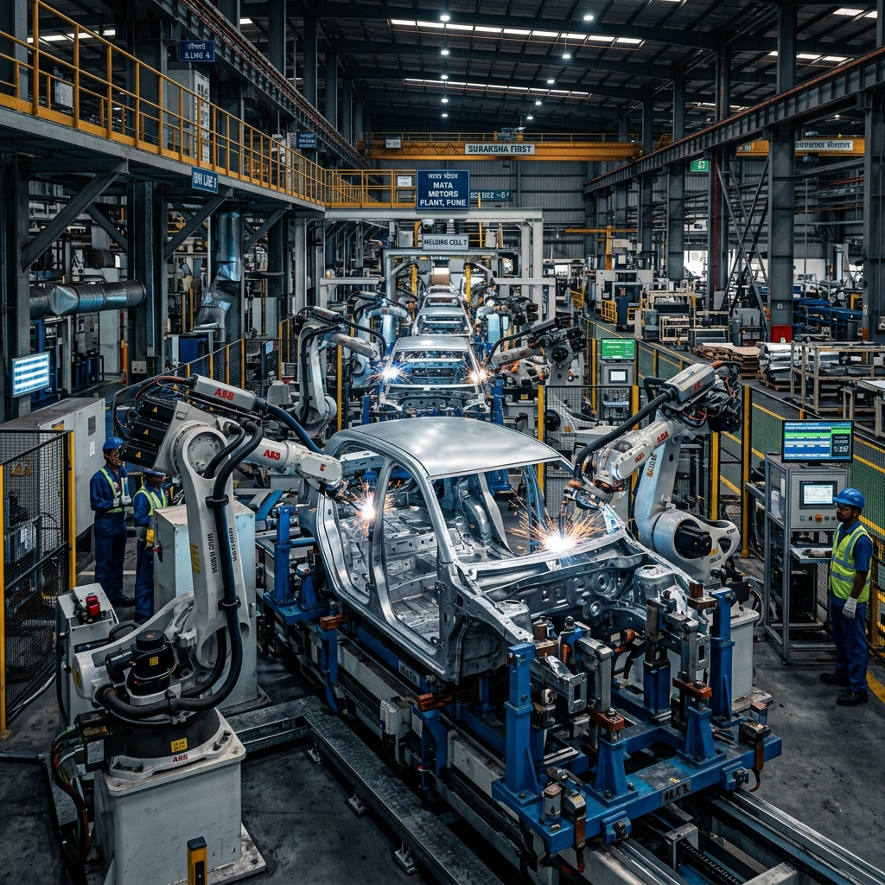

Advanced Robotics & BIW Fixture Manufacturing
Automation is the future of manufacturing, and at the heart of every automated assembly line are high-precision fixtures. Titanium Industries specializes in the manufacturing of robotics fixtures and Body-in-White (BIW) assemblies that empower automotive and industrial manufacturers to achieve higher efficiency and accuracy.
Our BIW fixtures are engineered to provide stable and precise positioning for welding, assembly, and inspection processes. We work closely with automation integrators to deliver custom-built jigs and fixtures that meet the rigorous demands of modern high-speed production environments.
Why Robotics Fixtures Matter
Precise fixturing is the foundation of quality in automated manufacturing. Even a micron-level deviation in a fixture can lead to significant assembly errors downstream.
Absolute Stability
Our fixtures provide the rigid support needed for high-accuracy robotic welding and assembly.
Custom Engineering
Tailored designs that integrate seamlessly with your existing robotic cells.
Improved Efficiency
Optimized fixture designs reduce cycle times and improve overall line throughput.
Key Features of Our Fixture Service
We provide end-to-end solutions for complex fixturing needs.
- High-Precision Component Alignment.
- Durable Wear-Resistant Materials.
- Seamless Integration with Automation.
- Rigorous Validation & Tolerance Checks.

Our Manufacturing Process
Step 01
Consultation
Analyzing assembly requirements and robotic interface specifications.
Step 02
Precision Build
Manufacturing high-accuracy components and assembling the fixture with care.
Step 03
Validation
Comprehensive CMM inspection to ensure every point meets the design intent.
Frequently Asked Questions
BIW (Body-in-White) refers to the stage in automobile manufacturing where the car body's sheet metal components have been welded together but before moving to the paint shop or engine assembly.